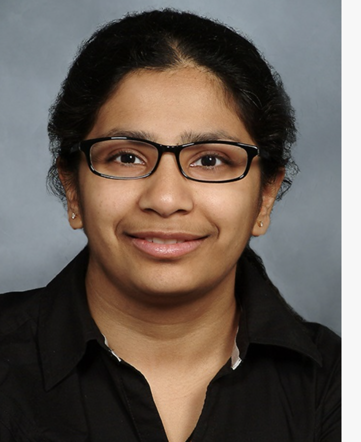

Dear PingPongParkinson New York City,
Here's our news this month:
- July Calendar
- Fee Increase
- Party was a Blast!
- Welcome Newbies
- Please Donate
July Calendar
Click on our homepage PingPongParkinson® New York City to register for sessions. The calendar is updated continuously, so be sure to check regularly. Pre-registration is required. You do not need to bring a paddle or balls to any session.
If you are headed to a Ping Pod venue, your door opener links are here:
Fee Increase
Beginning September 1st, the fee for a session will increase from $15 to $20. This primarily reflects price increases this year from some of our venues, the addition of more coaches, equipment, and administrative staff support.
If the fee presents financial hardship for you, let me know. The fee increase will be waived; no documentation is needed.
Lecture this Wednesday, June 24

We are fortunate to have one of New York City's leading neurologists, Dr. Harini Sarva, speaking at our next lecture on Wednesday. Dr. Sarva is Chief, Division of Movement Disorders, Weill Cornell Medicine. She will talk about Parkinson's studies being done at Weill Cornell and the benefits of participating in clinical trials. This includes some exciting new research on cell therapies.
Her lecture will be at 3pm on Wednesday, June 24 at Northwell Greenwich Village Hospital, 200 West 13th Street, 6th floor, room 643 (large conference room). This is near the corner of 7th Avenue and 13th Street in Manhattan. After her initial presentation there will be plenty of time for Q and A until 4:30pm
The PD Lecture Series is sponsored by Ping Pong Parkinson NYC, in collaboration with members of Luke's Rock Steady Boxing and Dance for PD classes. The lectures are free and open to the public. No registration is necessary. No Zoom links or recordings will be available.
Thanks to Bill Easterly for leading our lecture series, Maliq Mendez of Northwell for generously offering to host us, and Angela Tanglao for organizational support. Thanks to Sally Rudoy, Joan Greenberg, and Shira Toren of PPP-NYC for their work on the series.
Party was a Blast!

PingPongParkinson NYC celebrated our first anniversary as an independent 501(c)(3) nonprofit at an awesome party at Spin Flatiron on Sunday, June 14th. Ninety PPNYC members, family, friends, volunteers, coaches, and partner organizations enjoyed Spin's delicious food, played ping pong, and many competed in a tournament. Spin Co-founder and Vice Chairman Andrew Gordon welcomed the attendees and spoke about our long partnership supporting the Parkinson's community through ping pong. We heard stories from Nicholas, Joan, and Jonathon about PPNYC's impact on their lives.
Congratulations to Nicholas for winning the tournament!
Upper West Side Happenings
New Rec Center Venue on Tuesdays: Check out our new weekly session on Tuesdays 12:00 - 2:00 at the New York City Recreation Center at 232 W 60th St (Gertrude Ederle Rec Center) . The venue is large, with 6 tables and is well lit. Coach Ashley is a regular and much appreciated hitting resource. Since the Rec Center is managed by NYC, the tables are open to the public. There has not been a problem finding tables so far, but we will continue to monitor this.
W99 Back to 2-hour Session: Due to lack of interest, the 12-2pm session will be eliminated. We will continue to provide the weekly 2:00 - 4:00 pm session. Coach Gail will be available during the session. Registration will be limited to 9 players per session.
Welcome Newbies!
Donate
PingPongNYC has achieved 501(c)(3) status—your tax-deductible donations help us bring the joy and health benefits of ping pong to New Yorkers with movement disorders. Our EIN is 39-2259706. Please share this good news with your family and friends and encourage them to donate in any of the following ways:
- Click here to donate using your credit card on our website.
- Donate via Zelle to our account pingpongnyc.inc@gmail.com
- Donate via PayPal - click here
- Donate via Venmo to our account PingPongNYC Inc.@PingPongNYC
- Volunteer (admin support, greeters, web programmers, grant writers) : contact Janrosetwo@gmail.com or 516.680.7983
If you wish to be taken off this distribution list, hit reply and let me know.